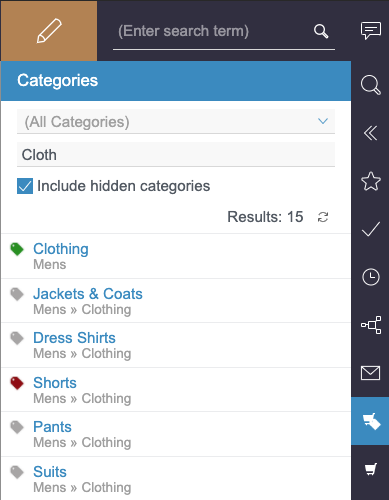

{fs} - Installation and configuration
Various components must be installed and configured in order to use the functions of the {modulname} module. The following sub-chapters explain the necessary steps for installing and configuring components in {fs}.
Installing the modules
The {modulname} delivery contains three modules that must be added to the {fs} server.
To install the modules, open the {manager} and select menu:Server properties[Modules].
The main panel contains a list of all the modules installed on the {fs} server.
Click btn:[Install], then select the contentconnect-fsm-<version number>.fsm file provided first, followed by the WebDavDeployment-<version number>.fsm and jstl.fsm files.
Each time you make a selection, click btn:[Open] to confirm it.
Once installation has been successfully completed, the folders {modulname}, WebDavDeployment and JSTL are added to the list.
Each of these must be given All permissions.
|
The JSTL module only needs to be installed on the {fs} Server if JSTL has not yet been integrated on the server in any other way. |
|
After any module installation or update, the {fs} server needs to be restarted. |
Using WebDAV with https
To use the WebDAV server with https instead of http, it is not necessary to perform any additional configuration work.
However, a local certificate authority managed by the company is normally used for https.
The certificate in question, including the entire chain up to the certificate on the WebDAV server, must be made available to the {fs} server’s JVM.
|
The JVM expects public certificates of this kind to be in the form of a |
Using the command below, import the public root or intermediate certificates into a JKS file and select btn:[Yes] in answer to the question whether the certificate is to be trusted.
You must repeat this process for each certificate.
keytool -import -file cert1.crt -keystore truststore.jks –storepass changeitCopy the Trust Store that is generated into the menu:firstspirit5[conf] directory of your {fs} server and add the following lines to the file menu:firstspirit5[conf>fs-wrapper.conf].
wrapper.java.additional.100=-Djavax.net.ssl.trustStore=conf/truststore.jks
wrapper.java.additional.101=-Djavax.net.ssl.trustStorePassword=changeit
wrapper.java.additional.102=-Djavax.net.ssl.trustStoreType=JKS|
The parameters must be activated by restarting the {fs} Server. |
If the WebDAV server is expecting mutual SSL authentication, you must use the following calls to create and sign a client certificate as a first step.
openssl genrsa -out private.key 2048
openssl req -new -key private.key -out request.csrThe file request.csr is sent to the certificate authority, which responds with the file cert.crt.
The private key, the public certificate, and the certificate from the certificate authority must then be collected in a Key Store to be read by the JVM.
cd firstspirit5/conf
openssl pkcs12 -export -in public.crt -inkey private.key \
-out clientcert.p12 -CAfile authority.crtIf the certificate chain consists of one or more intermediate certificates, you can import them via keytool.
keytool -import -file intermediate1.crt -trustcacerts \
-keystore clientcert.p12 -storepass changeitThe Key Store can be transferred to the JVM of the {fs} Server by adding the following lines to menu:firstspirit5[conf>fs-wrapper.conf].
wrapper.java.additional.103=-Djavax.net.ssl.keyStore=conf/clientcert.p12
wrapper.java.additional.104=-Djavax.net.ssl.keyStorePassword=changeit
wrapper.java.additional.105=-Djavax.net.ssl.keyStoreType=PKCS12Project import
A part of the included in the delivery is the reference project {projectname}, which must be installed on the {fs} server.
To do this, open the import dialog in the {manager} via the menu item menu:Project[Import] and click the {local} button to select the {modulname}ReferenceProject.tar.gz file from your local data system.
Then assign a project name and description and confirm the import with btn:[Yes].
After successful installation, the project is added to the list in the main panel (see figure Imported project in the {manager}).
|
In addition to the standard groups |
Configuring the project component
A project-specific configuration is required in order to use the {modulname} module. It is set up using the project component, which is already added to the reference project supplied.
To configure the project component, open the {manager} and select menu:Project properties[Project components].
A list of all existing project components is displayed in the main panel.
Select the entry {modulname} Project Configuration and click btn:[Configure] to open the associated dialog (see figure Configuration dialog for the project component).
|
The subsequent configuration is used by the module services. The service and all running clients must be restarted each time the configuration is changed. Otherwise, the change in question will not be applied either to the services or to the clients. |
- Base URL
-
Start by entering the
Base URL, which is derived from the URL of the {ccloud} instance and the ID of the site being used:https://<SUBDOMAIN INSTANCE>.demandware.net/s/<SITE ID>Based on this structure, a unique connection between the {fs} project and the {ccloud} site is always guaranteed.
The
Base URLfield is a mandatory field.
|
To avoid problems concerning the certificate, it must be ensured that the subdomain does not contain any periods in its name. |
- Client ID
-
The
Client IDis also a mandatory field. This is required in order to be able to use theOpen Commerce Shop API.
|
The |
- Password
-
The components of the {modulname} API require password-based authentication against {ccloud}. For this reason, a password that is defined when the API client is registered with {ccloud} is required in addition to the client ID.
- Refinements
-
Refinements that improve product searches are defined in this configuration field. Refinements are entered as key value pairs separated using commas.
|
Up to the first nine key value pairs entered are used ({ccloud} will not accept more than nine refinements). The format of the values of the key value pairs matches the format {ccloud} expects for refinement values. Both multiple values and sets of values can be entered for a refinement:
|
|
Since a refinement is also used for category searches, two special cases need to be considered: In the first case,
In this case, there are a total of ten refinement definitions, which is not permitted. Therefore, one of the refinements from the configuration is ignored so that the product search can be filtered by a category. In the second case,
In this case, there is a duplicate definition for the |
- Locale
-
The
Localeidentifies the language and region of the current project. A maximum of one ID for an active locale that is permitted for storefront requests in the site configured at the top of the dialog may be entered. If the field is left blank, thelocaleparameter will not be used in storefront requests. - Auth User
-
If access restriction is activated in {ccloud}, the
storefrontuser must be specified in this field. - Auth Password
-
The password belonging to the
storefrontuser is specified in this field.
- Product Page Template Mapping
-
One of the functions supported by the product report is the user-friendly creation of product pages, which use the page template Product Detail Page in the reference project. To enable this, this configuration field allows {sf} render templates to be mapped to {fs} page templates. The following rules apply here:
-
The field contains either no content at all or one or more mappings.
-
If the field remains empty, the use of product pages in the project is disabled.
-
Mappings are specified using a list separated by commas: <mapping>,<mapping>
-
Each mapping is arranged as follows: <isml_template>:<fs_template>
-
To configure a page template for all ISML templates that do not have an explicit mapping, the following form must be used: default:<fs_template>
-
- Default Folder (Product Pages)
-
To create a new product page, it is essential to know where the page is to be integrated into the structure. The reference name of the Product Pages structure folder has already been entered here. All new product pages within the reference project are created in this folder. If the field is left empty, the editor must select a menu level.
- Editable Folder (Product Pages)
-
This checkbox makes it possible to specify whether an editor can change the selection made in the
Default Folder (Product Pages)field. The function is activated initially. If it is then deactivated, the corresponding input component is hidden in the dialog for creating a category or product page. In this case, it is not possible for the editor to select or change the menu item for a newly created category or product page.
|
The field |
- Category Page Template Mappings
-
The mapping of page templates can be configured using this configuration field for the creation of category pages via the category report. The following rules apply here:
-
The field contains either no content at all or one or more mappings.
-
If the field remains empty, the use of category pages in the project is disabled.
-
Mappings are specified using a list separated by commas: <mapping>,<mapping>
-
Each mapping is arranged as follows: <isml_template>:<fs_template>[:fallback_category]
-
The third part of the mapping is optional and is used to specify a fallback category for category pages that are based on the specified ISML template
-
To configure a page template and an optional fallback category for all ISML templates that do not have an explicit mapping, the following form must be used: default:<fs_template>[:fallback_category]
-
|
We recommend using separate {fs} templates for product pages and category pages. |
- Default Folder (Category Pages)
-
In the same way as with product pages, for each new category page it is essential to know where the page is to be integrated into the structure. The reference name of the Category Pages structure folder has already been entered here. All new category pages within the reference project are created in this folder. If the field is left empty, the editor must select a menu level.
- Editable Folder (Category Pages)
-
In the same way as with the
Editable Folder (Product Pages)checkbox, here it is possible to specify whether editors can change the selection made in theDefault Folder (Category Pages)field. The function is activated initially. If it is then deactivated, the selection option is hidden in the dialog for creating a category page. In this case, it is not possible for the editor to select or change the menu item for a new page.
|
The field |
- Template Instantiation Script Uid
-
Select a script to be executed before and after category or product pages are created in this configuration field (the selection of a script is optional). The create_sfcc_item_wizard script specified is used to execute project-specific actions, which are required to generate the preview. In the reference project, it marks the created category or product page as translated for all languages.
|
Please note that only the code from the HTML channel of the script is executed. |
- View Type Priority
-
Images of products from {ccloud} are always provided in a range of sizes, but an image will not necessarily have been stored for every size. For this reason, the
View Type Priorityhas been provided so that you can define which image sizes you wish to incorporate, separating the information you enter with commas.In the case shown in the figure Configuration dialog for the project component, the
mediumimage associated with each product is identified and is used if it exists. If there is no medium image, thelargeimage is called up, followed by thesmallone if necessary.
|
As this is not a mandatory input field, it may therefore remain empty if you do not wish to define an order of priority. If this is the case, search results from a product query will be shown without an image. |
- Image Service Base URL
-
{ccloud} provides what is known as an
Image Service. If you wish to use it, you must specify the URL of the Image Service in the formhttp[s]://<image server host name>at this point. Product images are then called up via the Image Service.
|
Specifying the |
- Use Category Search
-
Next you must decide whether the reports for products and categories should provide filtering on categories in addition to the text search field. The corresponding checkbox
Use Category Search?is deactivated by default. In this case, the category filter is not applied in the context of the product or category search. The associated dropdown list is hidden in the report. If filtering according to category is required, the checkbox must be activated.
|
Filtering by category differs depending on the report used. In the report for the product search, filtering is possible across all categories. In the report for the category search, however, filtering is only possible via the top-level categories. |
- Show Category Report
-
This checkbox can be used to control the display of the category report. The checkbox is deactivated by default (i.e., only the report for product searches is active).
Figure 4. Category report - Test Configuration
-
Click the {testConf} button to check the entries that have been entered. For this, the
Client ID, theBase URLand - if available - theImage Service Base URLas well as the configurations for the product and category pages are taken into account.
Adding web components
Two web components are required for the Preview and for {wc} and have already been added to the reference project supplied.
Nevertheless, they still need to be installed on an active web server.
To do this, open the {manager} and select menu:Project properties[Web components].
Inside the main panel, various tab pages are visible.
Each tab page contains a list of the existing web components.
The list contains the following entries both for the Preview as well the {wc} (see figure Web components in the project properties):
-
{modulname} Web Component -
FS_JSTL_WebApp
Select a Web server on both tab pages via the selection box and start the installation by clicking the btn:[Install] button.
After successful installation, a dialog opens, in which the activation of the Web server must be confirmed.
More detailed information on how to add web components is available in the {fsadmindoc_en}.
Configuration of the web component
Part of the web component of the {modulname} module are the {proxy} and the {filter}.
Both components can be configured via the web.xml and are described in more detail in the following two chapters.
{proxy}
If problems with cross-origin requests occur during the preview due to the same-origin policy of modern web servers, then these can be remedied by using the {proxy} included in the {modulname} module.
To do this, the calls to the resources concerned must be routed via the {proxy}. The Preview chapter explains how this is done in the project.
The {proxy} is configurable via the web.xml with the following parameter:
| Parameter | Default value | Description |
|---|---|---|
connection.keepalive |
60 |
Duration of maintaining a connection within the {proxy} in seconds. Too high values may cause problems when loading resources. |
Example
An example snippet of the web.xml, in which the {proxy}'s parameter is configured and the preconfigured URL path has been adjusted, might look as follows:
<servlet>
<servlet-name>ContentConnectPreviewProxy</servlet-name>
<servlet-class>com.espirit.moddev.demandware.preview.proxy.ProxyServlet</servlet-class>
<load-on-startup>0</load-on-startup>
<init-param>
<param-name>connection.keepalive</param-name>
<param-value>120</param-value>
</init-param>
</servlet>
<servlet-mapping>
<servlet-name>ContentConnectPreviewProxy</servlet-name>
<url-pattern>/assets/*</url-pattern>
</servlet-mapping>{filter}
The {modulname} {filter} determines the necessary information for displaying a page in the {fs} preview.
In the slot-based approach, it identifies the correct storefront URL for this purpose, downloads the HTML on the basis of this URL, and substitutes the slots it contains with the corresponding editorial content.
If the CI API is being used, however, it has the Velocity fragments maintained in {fs} evaluated on the {sf} side, and displays the result at the corresponding point on the page in the {fs} preview.
To carry out these steps, the filter requires some information that can be configured via various parameters in the web.xml of the added web components (for the Preview as well as {wc}).
This information relates to various aspects, which can be divided into four groups.
|
The Adjustment in the web.xml for the preview in the {jc}
Beyond that, a configuration of the individual parameters is only necessary if their default values do not match the project-specific conditions. |
Storefront URL parameters
As described previously, the {filter} determines the necessary information on the {sf} side - both in the slot-based approach and when using the CI API.
It then displays this information in the {fs} preview.
To do this, a project-specific storefront URL is required.
As this is maintained in the project settings, the {filter} requires the associated input component to be specified for its query.
| Parameter | Default value | Description |
|---|---|---|
storefront.url.baseUrlFormField |
ps_storefrontUrlBaseUrl |
The input component for specifying the storefront’s base URL, which is extended with the page type and the ID of the element to be displayed (e.g., product, category, or asset ID). The component is maintained in the project settings. |
|
The syntax for the storefront base URL can be found in the menu:Merchandising Your Site[Search Engine Optimization>URL Syntax>Salesforce B2C Commerce URL Syntax Without SEO] chapter of the {sf} {ccloud} documentation. |
|
As a value of the input component E.g.: https://www.mystore.com/on/demandware.store/Sites-YourShopHere-Site/ |
|
Changes to the project settings do not take effect straight away, as they are saved in the session of the user. They require the client to be restarted. |
Storefront Crop Marks parameters
The placeholders included in the editorial content consist of a start as well as an end comment and have the format <!-- CMS-<IDENTIFIER>-START -→ or <!-- CMS-<IDENTIFIER>-END -→ by default.
However, the use of individual affixes can be activated via a toggle in the project settings, which must be added if necessary.
In this case, the default values are overwritten and specific prefixes and suffixes are used instead.
In order to grant the {filter} access to this information, it requires the associated input components to be specified.
| Parameter | Default value | Description |
|---|---|---|
storefront.cropMarks. customAffixes.enabledFormField |
ps_storefrontCropMarksCustomAffixesEnabled |
The toggle in the project settings for (de)activating the use of individual affixes. |
storefront.cropMarks. opening.prefixFormField |
ps_storefrontCropMarksOpeningPrefix |
The input component in the project settings for specifying a prefix for the start comment. |
storefront.cropMarks. opening.suffixFormField |
ps_storefrontCropMarksOpeningSuffix |
The input component in the project settings for specifying a suffix for the start comment. |
storefront.cropMarks. closing.prefixFormField |
ps_storefrontCropMarksClosingPrefix |
The input component in the project settings for specifying a prefix for the end comment. |
storefront.cropMarks. closing.suffixFormField |
ps_storefrontCropMarksClosingSuffix |
The input component in the project settings for specifying a suffix for the end comment. |
Storefront protection parameters
It is possible to protect the connection to {ccloud} via an authentication.
This can be (de)activated in {sf} and must be applied to {fs} via the corresponding toggle in the project settings.
If it is activated, the required access data must also be specified.
The {filter} must be able to access this information and therefore requires the associated input components to be specified.
| Parameter | Default value | Description |
|---|---|---|
storefront.protection.enabledFormField |
ps_storefrontProtectionEnabled |
The input component in the project settings for (de)activating the authentication for the storefront URL. |
storefront.protection.userFormField |
ps_storefrontProtectionUser |
The input component in the project settings for registering the storefront user. |
storefront.protection.passwordFormField |
ps_storefrontProtectionPassword |
The input component in the project settings for the password of the storefront user. |
Storefront downloader parameters
In addition to the other parameters, which are primarily used to determine the correct storefront URL, in the slot-based approach it must be possible to control the behavior of the {filter} while the HTML of the corresponding page is downloading.
For this, it has different parameters, which can be maintained in the project settings.
The {filter} must be able to access this information and therefore requires the associated input components to be specified.
|
The storefront downloader parameters are used to initialize the filter in the slot-based approach. As a result, they have a fixed fallback value for cases with a missing or empty input component. |
| Parameter | Default value | Description |
|---|---|---|
storefront.downloader.maxConnections |
ps_storefrontDownloaderMaxConnections |
The input component in the project settings for specifying the maximum permissible number of parallel connections to Storefront. |
storefront.downloader.socketTimeout |
ps_storefrontDownloaderSocketTimeout |
The input component in the project settings for specifying the time span (in milliseconds) in which a response from Storefront is expected. |
storefront.downloader.retryCount |
ps_storefrontDownloaderRetryCount |
The input component in the project settings for specifying the maximum number of connection attempts. |
|
The use of the following two parameters is only recommended in exceptional cases, as they bypass the certificate check for |
| Parameter | Default value | Description |
|---|---|---|
storefront.downloader.certificatesCheck |
true |
Setting this parameter to |
storefront.downloader.sslWhitelist |
empty |
If the certificate check is deactivated, the host names to be excluded from the blocking are maintained via the |
Storefront Cache Parameter
The HTML of slot-based pages downloaded by the {filter} is stored in a cache so that it does not have to be retrieved from the {ccloud} every time it is called.
Such a cache exists across sessions for each project on the {fs} server.
This cache has some parameters that can be maintained in the project settings.
The {filter} must be able to access this information and therefore needs to specify the associated input components.
|
Like the downloader parameters, the cache parameters are used to initialize the filter in the slot-based approach. For this reason they have a fixed fallback value in case of a missing or empty input component. |
| Parameter | Default value | Description |
|---|---|---|
storefront.cache.maxEntries |
ps_storefrontDownloaderMaxCacheEntries |
The input component in the project settings for specifying the maximum number of elements in the cache. |
storefront.cache.refreshAfterWrite |
ps_storefrontCacheRefreshAfterWrite |
The input component in the project settings for specifying the time span (in hours) until an element in the cache is marked as obsolete. |
storefront.cache.expireAfterWrite |
ps_storefrontCacheExpireAfterWrite |
The input component in the project settings for specifying the time span (in hours) until an item in the cache is marked as removable. |
storefront.cache.excludePatterns |
ps_storefrontCacheExcludePatterns |
The input component in the project settings for specifying storefront URLs that should not be kept in the cache.
The URLs are specified in the form of a list of regular expressions. |
Example
An example snippet of the web.xml, in which two parameters of the {filter} are configured, might look like as follows:
<filter>
<filter-name>ContentConnectPreviewFilter</filter-name>
<filter-class>com.espirit.moddev.demandware.preview.PreviewFilter</filter-class>
<init-param>
<param-name>storefront.downloader.socketTimeout</param-name>
<param-value>ps_myCustomStorefrontDownloaderSocketTimeout</param-value>
</init-param>
<init-param>
<param-name>storefront.downloader.retryCount</param-name>
<param-value>ps_myCustomStorefrontDownloaderRetryCount</param-value>
</init-param>
</filter>Resolutions
The reference project {projectname} has different sections, with which images can be integrated on the various pages. It should be possible for the editor to crop the images to a certain image section. This function is activated by specifying a resolution.
$CMS_REF(st_picture, resolution:"RESOLUTION")$For the reference project, the following resolutions are required: BANNER, SLIDE, GRID_ELEMENT_HIGH, GRID_ELEMENT_WIDE, GRID_ELEMENT_SQUARE, IMAGE_MAP, ARTICLE_TEASER_IMAGE and TECHNOLOGY_IMAGE.
They are already applied within the {manager} in the menu:Project properties[Resolutions] area and specified in the corresponding areas in the sections.
Deployment schedule
To transfer the content created in {fs} to the {ccloud} storage location, the reference project supplied has a schedule, which contains the actions specified below (see figure Generation schedule actions). A description of the individual actions is provided in the subsequent sub-chapters.
More information on creating a schedule is available in the {fsadmindoc_en}.
Initialize SFCC deployment
The first step is to initialize the deployment.
This involves setting up content cleanup.
While this is under way, a time stamp prior to the generation is created.
This time stamp is used by the cleanup action in the last step of the schedule to delete outdated assets and slot configurations.
It is for this reason that the schedule contains the action {sf} {ccloud} Initializer:
|
To use content cleanup, the initialization must be the first action of the schedule. Otherwise this can lead to inconsistencies in the data inventory. |
Content preparation - Full generation
To deploy the content that is relevant to {ccloud}, it must be determined from the project first. This requires a full generation to be carried out, generating all the referenced media in the correct resolution. The full generation also generates the XML collectors initialized in the project settings and fills them on the basis of the xmlCollector calls in the templates.
The schedule therefore has the generation action Content Preparation in whose Properties the following options are activated (see figure Content preparation action):
-
Perform FullGeneration -
Clear generation directory beforehand -
Generate Media in the generation directory
The defined Prefix for absolute paths /firstspirit is required for the WebDAV deployment action.
|
It is only possible to use the WebDAV module in conjunction with the default URL creator.
To generate the path, the entry |
The template sets for all the languages present in the project are also selected on the Extended tab page.
In addition, the variable dwre_xmlGeneration is added, which contains the value false.
This is set to the value true in the subsequent XML Import File actions and ensures that the XML files for the slot configurations and assets are only created once the generation is complete.
The XML template in the project controls the process of generating the XML file.
XML import file - Partial generations
{ccloud} expects all data that is transferred to it to be in the form of XML files. For this reason, the information determined during the full generation must be read out of the XML collectors that are generated. In this case, the information must instead be written to an XML file that has to be created each time.
For each XML collector initialized in the project settings, the schedule provides another generation action.
In contrast to the Content Preparation action, these are, however, partial generations.
In their Properties, the option Execute partial generation for following start nodes is therefore activated.
As a starting point, one of the page references based on the XML template is used (see figure Partial generation).
The variable dwre_xmlGeneration, which contains the value true, is also added to the Extended tab page for each of these actions.
Together with the start node selected in each case, this ensures that the selected page reference is not generated until this point in time.
This means that all the information required for creating the XML file will be available when this happens and it will not be possible for any gaps to appear.
The XML template in the project controls the process of generating the XML file.
WebDAV deployment
Next, the XML files generated by means of the partial generations must be transferred to {ccloud}.
They are published via a script action, for which the following parameters are defined in their Properties:
- url
-
The
URLspecifies the host and the path on the WebDAV server. It always has the following structure:https://<SUBDOMAIN INSTANCE>.demandware.net/on/demandware.servlet/webdav/Sites/Impex/…/<PREFIX>/<SITE ID>
|
The path points to the location where the XML file in question is expected to be during the import.
It must refer to an existing directory. |
- user
-
A technical user who is authorized to use the WebDAV interface is required in order to transfer the data. This user must have write permissions and must be specified by name here.
Further information about these rights can be found under menu:Administering Your Organization[Permissions, Users, and Roles>Roles and Permissions>Creating Roles and Assigning Permissions] in the {sf} documentation.
- password
-
A password is also required for the user specified in the previous step.
|
The technical user is subject to the password conditions defined by {ccloud}, which require the password to be changed at least every quarter. The parameter value must be changed each time this is carried out. |
- mediaurl
-
The media folder generated during the generation process, and its content, must be transferred to a separate directory so that {ccloud} can perform the import. This directory is defined using the parameter
mediaurl. Themediaurlalways has the following structure:https://<SUBDOMAIN INSTANCE>.demandware.net/on/demandware.servlet/webdav/Sites/Libraries/<SITE ID|LIBRARY ID>/default/<PREFIX>
|
The |
|
If a private library is being used, it is necessary to specify the site ID instead of the library ID in the path. |
- srcprefixdir
-
If only one particular directory is transferred to {ccloud}, it can be specified in relation to the root node of the generation directory using the optional parameter
srcprefixdir. If the parameter is not defined, or no value is saved for it, the entire generation directory will be transferred. - purge
-
This parameter is optional and may only have the value
trueorfalse. Iftrueis set, all the files and directories under the specifiedURLwill be deleted before the transfer starts. If the parameter is set tofalseor no value at all, all the existing files and directories under the specifiedURLwill be retained. New data will either be added or, in the case of existing data, overwritten.
|
The WebDAV deployment must not be executed in the event of an error. |
Trigger SFCC import job schedule
Following the publication of the created XML files via WebDAV deployment, the created job schedule is executed.
In {sf}, the job schedule triggers the import of the generated content and slot configurations into {ccloud}.
The {modulname} module provides the {sf} {ccloud} Importer schedule action for this purpose:
The action loads a configuration dialog, in which two parameters must be defined in addition to a freely assignable name.
- Import Job ID
-
This field contains the ID of the created job schedule.
- Timeout
-
The value in this field displays the time span in seconds, in which the status of the job schedule will be queried every second. If the job schedule has not completed in the specified time span, this schedule action is indicated as having an error. The default value is 10 seconds.
|
As the |
Salesforce Commerce Cloud Cleanup
Once the created job schedule has been executed, content cleanup is executed.
All outdated assets and slot configurations are queried by the OC API and then deleted.
The {modulname} module provides the {sf} {ccloud} Cleanup schedule action for this purpose:
In addition to a freely assignable name for this schedule action, the associated configuration dialog contains the following parameters:
- Use different site
-
Content cleanup uses a {ccloud} site to find the content assets and slot configurations to be deleted. The checkbox
Use different siteallows the use of content cleanup for a site other than the configured site.
- Site Id
-
If the
Use different sitecheckbox is active, the {ccloud} site to be used for content cleanup must be specified in this field. - menu:Content asset cleanup[Enabled]
-
This checkbox allows to enable/disable the content cleanup of assets.
- Library Id
-
The ID of the Content Library from that Content Assets are deleted must be entered in this field. In the case of a private library, the library ID corresponds to the site ID.
- Additional refinement(s)
-
In this field, attribute names and values can be specified for further filtering of the content assets to be deleted. The specification must have the following form:
ATTRIBUTE_NAME=ATTRIBUTE_VALUE [; ATTRIBUTE_NAME=ATTRIBUTE_VALUE] ...The attribute values can contain the following parameters:
Parameter Replacement by ${projectId}
The ID of the generated {fs} project
${projectName}
The name of the generated {fs} project
|
The specified attributes must exist as custom attributes in the {ccloud} and have been filled with values via the {fs} generation before the filtering described here can be used. |
- menu:Slot configuration cleanup[Enabled]
-
This checkbox allows the de-/activation of the content cleanup from Slot configurations.
- Filter query
-
This field is used to filter the slot configurations to be deleted. A filter is specified as a query document in JSON format. Within the query, the parameters of the field Additional refinement(s) can be used, as the following example of a TextQuery illustrates:
"text_query": { "fields": ["c_fsProjectId"], "search_phrase": "${{projectIdRaw}}" }If the
Filter queryfield remains empty, the {modulname} module uses a MatchAllQuery, whereby the slot configurations to be deleted are not further filtered.
|
To avoid inconsistencies in the database or data loss, the action |
|
Since the |
Workflows
Content is released, deleted, and published by editors within the supplied reference project {projectname} via workflows. For this reason, it contains a publish workflow, as well as the {bwfs}, which can be used as an alternative to project-specific workflows.
Installing the {bwfs} module
Before using the workflows, you must install the {bwfs} module on the {fs} server and activate the web component.
The necessary steps are the same as for installing the other modules and activating the associated web components.
However, the web component for the {bwfs} is only needed on the {wc} tab page.
In addition, to use {bwfs} in the {wc}, the provided {bwfs} Status Provider must be selected in the menu:Project properties[{wc}] area within the {manager}.
In the reference project {projectname}, this setting has already been applied (see figure Element Status Provider).
In addition, in the menu:Project properties[Options] area, the Workflow for deleting elements is preselected.
As a result, any action to delete elements within the project (Del button, delete icon) is executed via this workflow.
The native (independent of a workflow) deletion of elements is therefore not available - not even for the administrator.
Templates
The {bwfs} and the workflow supplied with the require different templates. Usually, these need to be imported for the {bwfs} via the context menu in the {fs} project used. However, they are already available in the reference project and importing the templates is therefore not necessary.
|
The publish workflow initiates the deployment schedule and requires its name for this.
If this deviates from the Generate and deploy to SFCC expression, the value of the |
Permission assignment
In the final step, the workflows must be authorized in the individual stores so that they can be executed on {fs} elements.
To do this, select menu:Extras[Change permissions] from the context menu of the stores' root nodes to call up the permission assignment.
This step has also already been carried out in the reference project and is therefore omitted.
|
The permissions for executing workflows set on the stores' root nodes relate to the |
You can find more detailed information in the {basicwfsdoc_en}.
Project settings
There is some essential project-specific information that needs to be entered for the connection between {fs} and {ccloud} (see figure Project settings). It is entered using the project settings form and must be specified within the reference project.
|
Changes to the project settings do not take effect straight away, as they are saved in the session of the user. They require the client to be restarted. |
- Storefront Base URL
-
The field is used to specify the storefront’s base URL, which is extended with the page type and the ID of the element to be displayed (e.g., product, category, or asset ID). It has the following format:
https://<SUBDOMAIN INSTANCE>/on/demandware.store/Sites-<SIDE ID>-SiteMore information on the storefront base URL is available in the {ccloud} Documentation in the chapter menu:Merchandising Your Site[Search Engine Optimization>URL Syntax>Salesforce B2C Commerce URL Syntax Without SEO].
|
As a value of the storefront base URL, only up to the locale, not the entire URL must be entered in accordance with its specified format. Example: |
- SFCC Content Asset ID Prefix
-
To uniquely identify the content assets generated by {fs}, a prefix for the content asset ID is to be defined at this point.
- Preview Protection (BasicAuth)
-
Within {ccloud}, it is possible to protect access to the storefront by activating the
Online (protected)site status. If this restriction is applied, thestorefrontuser must be specified in {fs}. Activating the toggle displays theUserandPasswordfields. - User
-
If access restriction is activated in {ccloud}, the
storefrontuser must be specified in this field. - Password
-
The password belonging to the
storefrontuser is specified in this field. - StarterPackage Version
-
This field is solely utilized to display the version of the used reference project.
- Enable Custom Affixes
-
The toggle makes it possible to use individual affixes for the HTML comments included in the templates, which are used to indicate the content to be substituted for the preview. These have the format
<!-- CMS-<IDENTIFIER>-START -→or<!-- CMS-<IDENTIFIER>-END -→by default. When the toggle is activated, all four affixes are overwritten and the default values are therefore no longer taken into account. The specific values can then be specified using the following fields. If one of the form fields is missing even though the toggle is activated, an empty string is used for the corresponding affix.
|
For the individual affixes, the format Spaces that are entered in the configuration fields in front of or behind an individual affix are ignored. If the toggle is activated without at least one affix defined, this can lead to unexpected behavior. |
|
Within the reference project, all HTML comments have the standard format. For this reason, the template for the project settings does not include the toggle or the form fields for the use of individual affixes. |
- Opening Prefix/Opening Suffix
-
Together with the identifier, the opening prefix and the opening suffix form the start HTML comment and mark the beginning of the content to be substituted.
- Closing Prefix/Closing Suffix
-
Together with the identifier, the closing prefix and the closing suffix form the end HTML comment and mark the end of the content to be substituted.
- Storefront-URL Controller Form Field
-
To determine the storefront URL, the {modulname} {filter} must know which controller (e.g., Home, Page or Search) it needs to address. This information generally depends on the page to be displayed, which is why the {filter} reads it out from an input component on the preview page form. The {filter} uses the
pt_storefrontUrlControllerfield by default. This behavior can be configured in the project settings using theps_storefrontUrlControllerFormFieldfield, in which the name of the form field to be read out is entered if required.
|
Within the reference project, all page templates have the |
- Storefront-URL Context ID Form Field
-
In addition to the controller, the {modulname} {filter} may in some cases require an ID (such as a product, category, or content asset ID); it also determines this on the basis of the page form. There is the option of configuring the corresponding form field in the project settings using the
ps_storefrontUrlContextIdFormFieldfield. The {filter} reads out thept_storefrontUrlContextIdcomponent by default.
|
Within the reference project, all page templates have the |
Additionally, the template is used to initialize two XML collectors and a Product Manager, which are used in the other page and section templates of the project. These page and section templates define which data is to be transferred to {ccloud}. During the generation process, the data is collected on the basis of these definitions and the XML collectors are filled.
|
If there are project-specific requirements for the XML collectors, then these can be adapted using the methods from the Information on calling up the Product Manager is contained in the Javadoc for the |